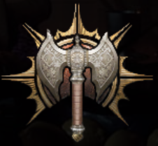
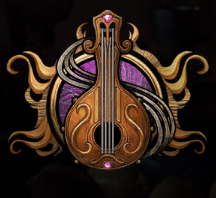

Bauldr's Gate 3 Review
Story 8/10
Even though Bauldr's gate 3 is a video game it captures the esscence of a D&D adventure. The multiptuide of dialog options with npc's allows for player agency and expression. The world building and how your choices affect your story makes for a truly imerssive experince. This is especially true in the first act of the game where the player is just dropped in and can have multiple ways to continue the main quest. Every side quest just as importnat as the main quest as well. However the later acts especially the final act feel incomplete. Their were points in the final act where my party members would bring up scenarios that I never went through. Hopefully Larian Studios polishes this out making this game a true masterpiece.
Gameplay/Combat 9/10
The combat follows traditonal D&D rules with some hombrew for class balance and turn based combat. Whether your a warlock spamming eldritch blast or a barabrian raging thourgh the front lines their is a playstyle for everyone. Every class also has subclasses allowing for even more customizality.
Fun Classes:
-

- Barbarian
- Berserker
- Wild Heart
- Warlock
- Archfey
- The Fiend

- Bard
- College of Lore
- College of Words
While there are a few bugs especially with the camera at times, they are not game breaking.The early levels feel very slow especially for melee chracters till around level 5, the game starts to pick up in combat after. Just like the story you could always try to talk your way out of a scernario that feels like it will brake into a combat. Overall the combat is still turn based which might turn some people away from the game but its one of the most fun turn based combat in a while.
Summary 9/10
Overall the game is amazing solo or with friends. It has everything an rpg player would want from a game. The story and characters are diverse and make you feel immersed in its world. The combats may feel slow at the start but it quickly becomes fun and requires strategies to beat.